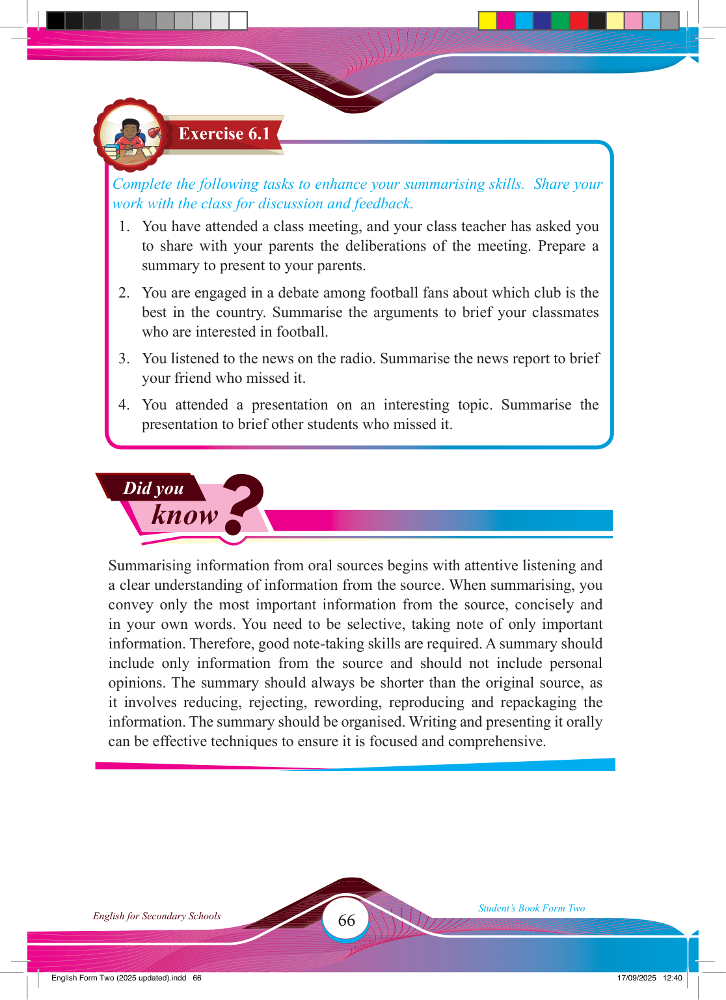

66
Student’s Book Form Two
English for Secondary Schools
Did you
know
?
Complete the following tasks to enhance your summarising skills. Share your work with the class for discussion and feedback.
1. You have attended a class meeting, and your class teacher has asked you to share with your parents the deliberations of the meeting. Prepare a summary to present to your parents.
2. You are engaged in a debate among football fans about which club is the best in the country. Summarise the arguments to brief your classmates who are interested in football.
3. You listened to the news on the radio. Summarise the news report to brief your friend who missed it.
4. You attended a presentation on an interesting topic. Summarise the presentation to brief other students who missed it.
Summarising information from oral sources begins with attentive listening and a clear understanding of information from the source. When summarising, you convey only the most important information from the source, concisely and in your own words. You need to be selective, taking note of only important information. Therefore, good note-taking skills are required. A summary should include only information from the source and should not include personal opinions. The summary should always be shorter than the original source, as it involves reducing, rejecting, rewording, reproducing and repackaging the information. The summary should be organised. Writing and presenting it orally can be effective techniques to ensure it is focused and comprehensive.
Exercise 6.1
17/09/2025 12:40